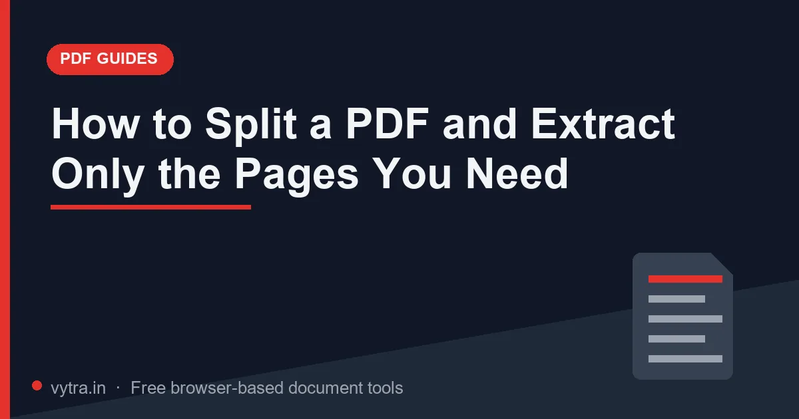

How to Split a PDF and Extract Only the Pages You Need

"Upload only pages 5 to 7 of your marksheet." "Submit the certificate — a single-page PDF." Application forms constantly demand part of a document, not the whole thing. Sending the full 40-page file means rejection (wrong content), an oversized upload, or both. Extracting the right pages takes seconds in a browser.
Quick answer: Open the Split PDF tool, drop the document, enter the page range the form asked for (for example 5-7), and extract. You get a new single-purpose PDF containing only those pages — originals untouched.
Split vs extract vs divide — the mental model
- Extract a range — "give me pages 5–7 as one new file." This is what most application instructions actually need.
- Divide every page — "turn a 20-page PDF into 20 single-page files." Useful for uploading individual certificates scanned into one bundle.
- Split at a bookmark/section — divide a big report at logical boundaries; rarely needed for exam forms, common for contracts and invoices.
All three start from the same tool; you choose the mode and the range.
Step-by-step: extract the pages a form asks for
- Open the Split PDF tool and drop your document. The tool shows the total page count — verify it matches your viewer.
- Read the instruction twice. "Pages 5–7" means three pages: 5, 6 and 7 (inclusive). Off-by-one errors are the most common reason for re-uploads.
- Enter the range exactly as instructed (5-7), or select individual pages (for example pages 2 and 9 only) if the interface offers page selection.
- Extract, then open the output and check: correct pages, correct order, nothing cropped.
- Compress the result if the field also has a size limit — extraction alone often fixes size, but scans may still need the Extreme preset.
What to expect: Extraction copies only the pages you chose — a certificate sitting inside a heavy 40-page bundle comes out at its own weight (often 100–300KB for a single scanned page) while the rest of the bundle stays behind. In size-limited forms, pulling the right page beats compressing the wrong document every time — the extracted number often clears the limit with no compression at all.
From extraction to submission: building the exact bundle
Real applications rarely need a single extraction — they need a small, precise bundle assembled from several sources. The efficient pattern is: extract the required pages from each source document first (page 3 of the marksheet, page 1 of the category certificate, the ID side showing the address), then merge those extracted parts into exactly the file the form requests (merge guide). Extract-before-merge keeps every intermediate file tiny, verifiable and reusable across applications — instead of merging everything and hunting through the result later.
Name each extracted part as you go: Marksheet_p3.pdf, CategoryCert_p1.pdf. Assembling the final bundle then takes seconds, and reconstructing which document came from where stays trivial even weeks later during counselling. If a range extraction returns something unexpected — a blank page or the wrong section — redo it from the original document; never re-extract from an already-extracted file, where internal numbering no longer matches the source. Five seconds of page-by-page verification on the output closes the loop every time.
When extraction beats compression (and vice versa)
- Extract when the instruction names specific pages, when only one certificate from a bundle is needed, or when a page limit exists alongside the size limit.
- Compress when you need the whole document — all pages must travel together (complete marksheet sets, contracts, full certificates with attached pages).
- Do both when the required pages are heavy colour scans: extract first (fewer pages), then compress (smaller each page).
Common mistakes
- One-off pages counted wrong — some portals count from the cover page, some don't. Match the portal's numbering by previewing the original file page by page.
- Extracting from an already-compressed file — works fine technically, but if you need further size cuts, extract from the original and then compress once. Repeated compression-decompression cycles slowly degrade scans.
- Page ranges with leading zeros or spaces — enter the range exactly as the tool expects: simple digits and a hyphen.
- Forgetting to verify the output — always open the extracted file before uploading it. A wrong page discovered after submission is a much larger problem.
Pro tips
- Combine extraction with merging: pull the right pages from three source documents, then merge those pages into one bundle (merge guide) — the cleanest way to build exactly what a form requests, nothing more.
- Name outputs with their range: Certificate_pp5-7.pdf — instantly auditable during final review.
- Keep source PDFs whole in your archive; never overwrite the original with the extracted version.
- For repeat applications, build the extracted file once — every subsequent form reuses it.
- If a portal asks for "single-page PDF", confirm the output is truly one page in your viewer before upload (a stray blank page hides easily).
Frequently asked questions
Does splitting reduce quality?
Can I extract non-sequential pages, like 2 and 9 only?
The extracted PDF is still too large — what next?
Will page numbering stay correct after extraction?
Try it yourself: Open Split PDF — free, private, and it runs entirely in your browser.
Open Split PDF →